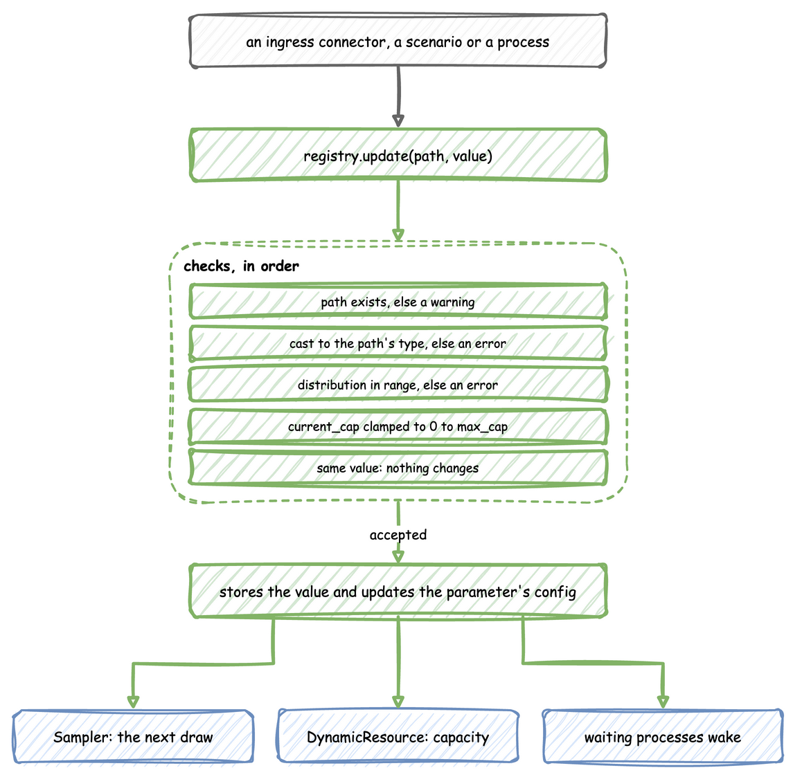
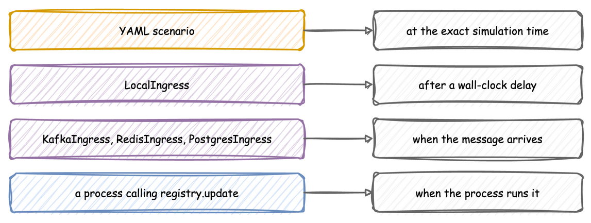

Live Parameters: SimulationRegistry
Every run has one SimulationRegistry, at env.registry. It maps dot-notation paths, such as Line_A.resources.lathe.current_cap, to the values the simulation reads. An ingress connector, a scenario or a process changes a parameter by updating its path, and the simulation follows the change without restarting.
Registry Paths
run() flattens the configuration into the registry, and every path an ingress message, a scenario or registry.get names has one of these forms:
| Builder call | Paths |
|---|---|
add_arrival(name, ...), add_service(name, ...) |
<sim_id>.arrival.<name>.rate and <sim_id>.service.<name>.rate for an exponential distribution, .value for a constant, otherwise .mean and .std, and .low for a truncated normal |
add_resource(name, ...), add_container(name, ...) |
<sim_id>.resources.<name>.current_cap and .max_cap, <sim_id>.containers.<name>.current_cap and .max_cap |
add_variable(name, value) |
<sim_id>.variables.<name> |
Stores, registered through SimParameter(stores=...) on the low-level API, take <sim_id>.stores.<name>.current_cap and .max_cap. An update to a path that does not exist is logged as a warning and ignored.
compile_parameters() on a SimulationContext returns the SimParameter that run() registers, so the paths of a configuration can be checked before the run.
params = SimParameter(
sim_id="Line_A",
arrival={"standard": DistributionConfig(dist="exponential", rate=0.5)},
service={"milling": DistributionConfig(dist="normal", mean=3.0, std=0.5)},
resources={"lathe": CapacityConfig(current_cap=2, max_cap=5)},
variables={"conveyor_speed": 1.5},
)
env = DynamicRealtimeEnvironment(factor=0.0)
env.registry.register_sim_parameter(params)
# Registered paths include:
# Line_A.arrival.standard.rate
# Line_A.service.milling.mean, Line_A.service.milling.std
# Line_A.resources.lathe.current_cap, Line_A.resources.lathe.max_cap
# Line_A.variables.conveyor_speed
print(env.registry.get("Line_A.resources.lathe.current_cap").value) # 2
How an Update Is Applied
env.registry.update(path, value) applies one change. The checks run in order, and an accepted value reaches the parts that read it:

- A path that does not exist is logged as a warning, and the update is ignored.
- A value of a different type is converted to the type the path holds, so the string
"5"sent to an integer path becomes5. The conversion is Python's own, so2.5sent to an integer path becomes2. A value that cannot be converted is logged as an error, and the update is ignored. - A distribution parameter outside its range, such as a negative
stdor a rate of 0, is logged as an error, and the update is ignored. The rules are the ones checked at load, listed underdist. - A
current_capbelow 0 or above the path'smax_capis stored as 0 ormax_cap, with a warning. - A value equal to the current one changes nothing.
- Otherwise the value is replaced, and the configuration object the path belongs to is updated too, such as the
rateof aDistributionConfigor an entry of the variables.
Ingress connectors run on a background thread, so they do not call update themselves. Each puts a (path, value) pair on a queue, and a SimPy process started by setup_ingress applies everything queued every 0.1 simulation seconds. At factor=1.0 an update therefore lands within 0.1 seconds of arriving. The simulation time it lands at depends on when it arrives, so a change that must happen at an exact simulation time is a scenario.
env.registry.update("Line_A.resources.lathe.current_cap", 3) # applied
env.registry.update("Line_A.resources.lathe.current_cap", 9) # stored as 5, the max_cap
env.registry.update("Line_A.service.milling.std", -1.0) # refused, the old 0.5 stays
env.registry.update("Line_A.resources.lath.current_cap", 3) # no such path: ignored
What Follows a Change
- Arrival and service distributions. A
Samplerreads the configuration object each time it draws, so the next draw uses the new value.context.wait_for_arrivaldraws when it is called, so the arrival already being waited for keeps its old gap.@app.taskdraws the service time once the resource is acquired, so a task still in the queue uses the new value. - Resource capacity. A
DynamicResourcefollowscurrent_cap, rounded down to a whole number and limited to between 0 and themax_capthe registry holds. A change tomax_capappliescurrent_capagain under the new limit. Resources describes what happens when the capacity shrinks below the number of tasks in progress. - Container capacity. A
DynamicContainerfollowscurrent_cap, fractions included even when the starting value is a whole number, limited to between 0 and themax_capthe registry holds. A change tomax_capappliescurrent_capagain under the new limit. ADynamicStoredoes the same with whole numbers. - Variables. The new value is stored. A process reads it with
env.registry.get(path).value.
milling = env.registry.get_config("Line_A.service.milling")
print(milling.mean) # 3.0: the Sampler reads this object on its next draw
env.registry.update("Line_A.service.milling.mean", 4.0)
print(milling.mean) # 4.0: the same object, updated in place
Sources of Updates
Each source lands its change at a different moment:

- Ingress connectors: Kafka, Redis, PostgreSQL and
LocalIngress. Connectors gives the message each one expects. - A scenario in a YAML blueprint, compared with
LocalIngressbelow. - A process, which calls
env.registry.update(path, value)directly, as the maintenance process in Python in a Blueprint does.
Scenarios versus LocalIngress
A YAML blueprint can carry a scenario: a list of registry changes, each with the simulation time it applies at, such as {at: 10, path: Line_A.resources.lathe.current_cap, value: 3}. Script an experiment shows a complete file.
# The first blueprint with a scripted experiment: a second drill comes online at
# 30 s, parts arrive twice as fast from 1 min, and the extra drill is removed at
# 2 min. Every change lands at exactly that simulation time, on every run.
simulation:
sim_id: Workshop
factor: 0
random_seed: 1
egress:
- type: Console
resources:
drill: {current_cap: 1, max_cap: 3}
services:
drilling: {dist: normal, mean: 4.0, std: 1.0}
arrivals:
parts: {dist: exponential, rate: 0.2, spawn: drill_part}
tasks:
drill_part:
service: drilling
resource: drill
payload: {status: finished}
id_field: part_id
telemetry:
# Shows each change as it lands.
- interval: 10
publish:
drill.capacity: drill.capacity
drill.queue_length: drill.queue_length
scenario:
- {at: 30, path: Workshop.resources.drill.current_cap, value: 2}
- {at: 1 min, path: Workshop.arrival.parts.rate, value: 0.4}
- {at: 2 min, path: Workshop.resources.drill.current_cap, value: 1}
run:
until: 3 min
A scenario is not a connector. It is compiled into a SimPy process that waits on the simulation clock, so each change lands at exactly its at, on every run and at any factor, including factor=0. Every path is checked against the registry when the file is loaded, so a misspelt path stops the load with its line number. LocalIngress waits on the wall clock instead, and an unknown path is only logged as a warning when it is due.
A scenario and an ingress connector can be used together. Both write to the same registry, so a scripted baseline can run while an operator steers over Kafka. When both change the same path, the later write wins.
Waiting for a Change
env.registry.get(path).wait_for_change() returns a SimPy event that fires when the value at that path changes. Each value has one change signal, and the first process waiting takes it. DynamicResource, DynamicContainer and DynamicStore already wait on their current_cap and max_cap, so wait only on paths that nothing else waits on, such as variables.
def watch_speed(env):
"""Logs the conveyor speed every time it changes."""
speed = env.registry.get("Line_A.variables.conveyor_speed")
while True:
yield speed.wait_for_change()
print(f"t={env.now}: conveyor speed is now {speed.value}")
env.process(watch_speed(env))